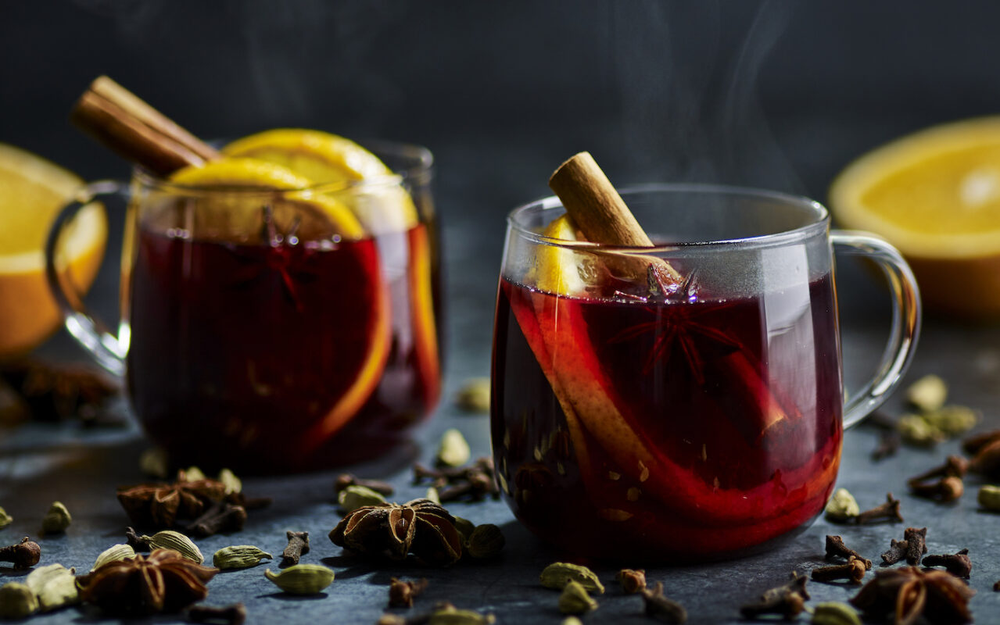

Glühwein is a type of mulled wine enjoyed in Germany, Austria, and Switzerland. It is a staple at Christmas markets and is often enjoyed as an après-ski drink. This German version is a classic, combining red wine, citrus zest, and spices such as anise, cinnamon, and cloves.
Meal prep time : 40 minutes
Servings : 6